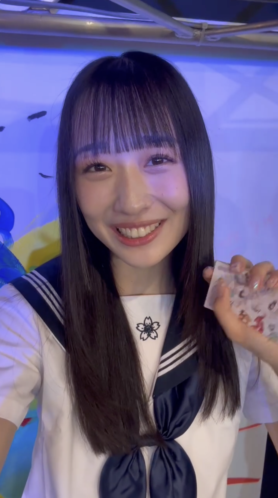

ニコニコ動画 (Re:Re:復活)
ニコニコ動画は復活しました。
お使いのブラウザは動画をサポートしていません。
投稿
とっぽ誕生日おめでとう！！
投稿者: 青葉ひなり: 2024/07/03 再生: 78.8万 コメント: 2.9万 マイリスト: 2.2万
関連動画

ろくうら誕生日おめでとう！！ / 八木ひなた
2024/07/21
ろくうら誕生日おめでとう！！ / 八木ひなた
2024/07/21